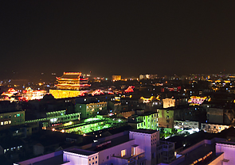
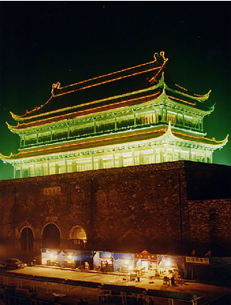

凤阳地处安徽省东北部，淮河中游南岸，总面积1949.5平方公里，人口74万。大自然的厚爱，馈赠给凤阳一方名山胜水， 孕育了内涵厚重的淮河文化，哺育了一代农民皇帝朱元璋，造就了“敢为天下先”的小岗人，凤阳也因此以“帝王之乡”、 “花鼓之乡”、“改革之乡”、“石英之乡”、“曲艺之乡”和“中国民间文化艺术之乡”享誉海内外。凤阳是历史文化名城， 2005年被评为“全省旅游强县”， 2006年被评为“一生中要去的‘66个文化旅游大县’之一”，2007年被评为“中国县域旅游品牌百强县”，2008年被评为省旅游优秀单位。
经过近20年的开发建设，我县现有4A级景区2家，3A级景区3家；国内旅行社4家，三星级旅游厕所5个，二星级旅游厕所2个；全国重点文物保护单位1处(6个点)，省级文物保  护单位5处；国家红色旅游经典景区1处；省级农家乐示范点3处，四星级农家乐1处； 省最佳旅游乡镇1个，省优秀旅游乡镇1个，省旅游乡镇4个；二星级旅游饭店1个，二星级旅游餐馆1个。
凤阳山水灵秀，自然景观奇特优美。韭山洞因山暖地灵多滋生野韭而得名，是长江以北少有的大型溶洞。它“深、大、险、奇、古”， “恢宏朴野、大块文章”，被专家誉为“江北第一洞”。狼巷迷谷景区属于典型的岩溶地貌形态，区内森林茂密，怪石林立，沟壑纵横 1，峡谷幽深，石林、石峰各显其态、变化万千。石巷曲折蜿蜒，时宽时窄，置身其中，仿佛进入仙境迷谷一般。 狼巷迷谷还有被称为“华夏第一寺”的禅窟寺。卧牛湖景区水域宽阔，水体洁净，荡舟玩水，其乐无穷。这三个景区相互毗邻，相得益彰， 构成了不可多得的有山、有水、有洞、有泉、有寺、有峡谷的凤阳山风景区。 凤阳山风景区1987年被列为安徽省风景名胜区，1994年被国家林业部批准为韭山国家森林公园，2009年被国土资源部批准为国家地质公园。
凤阳历史悠久，文化底蕴深厚。拥有明代第一都——明中都城，它是南京故宫和北京故宫的蓝本，明中都城遗址被专家誉为“东方巴比伦，明代第一流”； 明代第一陵——明皇陵，它规模庞大，神道石像生数量之多、雕刻之精，皇陵碑价值之高，无字碑之神秘，堪称一绝；华夏第一谯楼——明中都鼓楼， 作为明中都城的重要附属建筑，一直以其高大雄伟为国内之最，鼓楼上的朱元璋展览馆用翔实的史料、真实的实物介绍了朱元璋传奇的一生， 是全国唯一全面介绍朱元璋的展览馆；皇家第一寺——龙兴寺，是朱元璋出家礼佛的寺庙，是朱元璋的发祥地，它与整个朱明王朝有着密切的渊源关系， 也是江北一带的佛教中心、中国重要的皇家寺院。明中都皇故城及明皇陵石刻，1982年被列为全国重点文物保护单位。县内还有省级文物保单位龙兴寺、 古钟离城遗址、禅窟寺摩崖石刻、鼓楼台基等。其他人文景观还有庄惠濠梁 观鱼，高山流水识知音的钟子期墓，苏东坡题名的禅窟寺、玉蟹泉等一百多处。
凤阳勇于创新，社会知名度高。 凤阳县小岗村18户农民以敢为天下先的胆识，按下了18颗鲜红的手印，搞起了“大包干”，揭开了中国农村改革的序幕， 书写了中国历史巨卷中厚重的一页。一代伟人邓小平曾高度评价小岗村：“ 凤阳花鼓中唱的那个凤阳县，绝大多数生产队搞了 大包干，也是一年翻身，改变面貌” ； 1998年，原国家主席江泽民亲临小岗村视察；2008年国家主席胡锦涛视察小岗村。
凤阳文化艺术丰富多彩。凤阳花鼓唱彻600年时空，唱遍大江南北。凤阳花鼓享有“东方芭蕾”之美誉，被列入国家首批非物质文化遗产 ；工艺独特，色彩丰富，寓意深刻的凤阳“凤画”， 声誉也远传海内外等。通过三次凤阳花鼓文化旅游节的成功举办，使县城环境更加整洁、旅游氛围更加浓郁、接待游客更加热情。
经过不断的开发建设，我县配套完善了旅游相关服务设施。县内宾馆拥有床位500多张，其中凤阳宾馆拥有床位200多张。我们开发生产了凤阳花鼓、 凤画、日月牌粉丝、御膳麻油以及大明帝王系列酒等凤阳特色旅游商品。凤阳已初步具备了“吃、住、行、游、购、娱”综合服务网络。
凤阳不仅拥有丰富的旅游资源，更有便利的交通条件。京沪高铁、京沪铁路、合蚌铁路、淮南铁路穿境而过，合徐高速、蚌宁高速、合蚌公路和明亳公路在此交汇， 凤阳还拥有可通江达海的千里淮河第一港，蚌埠机场紧邻凤阳，距凤阳仅25公里，构成了立体式交通网络。
凤阳自然景观和人文景观珠联璧合，社会文化资源博大丰厚， 是人们寻幽探古、休闲度假和考察学习的好去处。欢迎更多的朋友到凤阳观光游览、休闲度假，领略凤阳风情。